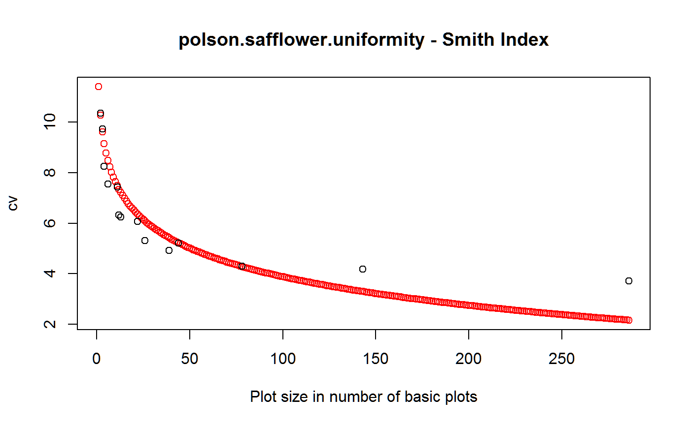

Uniformity trial of safflower
polson.safflower.uniformity.RdUniformity trial of safflower at Farmington, Utah, 1962.
data("polson.safflower.uniformity")
Format
A data frame with 1716 observations on the following 3 variables.
rowrow
colcolumn
yieldyield (grams)
Details
A uniformity trial of safflower at the Utah State University field station in Farmington, Utah, in 1962. The field was approximately 0.5 acres in size, 110 x 189 feet. A four-row planter was used, 22 inches between rows. Four rows on either side and 12 feet on both ends were removed before harvesting.
Yield of threshed grain was recorded in grams.
Field width: (52 rows + 8 border rows) * 22 in = 110 ft
Field length: 33 sections * 5ft + 2 borders * 12 ft = 189 ft
Source
David Polson. 1964. Estimation of Optimum Size, Shape, and Replicate Number of Safflower Plots for Yield Trials. Utah State University, All Graduate Theses and Dissertations, 2979. Table 6. https://digitalcommons.usu.edu/etd/2979
References
None.
Examples
# \dontrun{ library(agridat) data(polson.safflower.uniformity) dat <- polson.safflower.uniformity libs(desplot) desplot(dat, yield ~ col*row, flip=TRUE, aspect=189/110, # true aspect main="polson.safflower.uniformity")libs(agricolae) libs(reshape2) dmat <- acast(dat, row~col, value.var="yield") # Similar to Polson fig 4. tab <- index.smith(dmat, col="red", main="polson.safflower.uniformity - Smith Index", xlab="Plot size in number of basic plots")# Polson p. 25 said CV decreased from 14.3 to 4.5 # for increase from 1 unit to 90 units. Close match. tab <- data.frame(tab$uniformity) # Polson only uses log(Size) < 2 in his Fig 5, obtained slope -0.63 coef(lm(log(Vx) ~ log(Size), subset(tab, Size <= 6))) # -0.70#> (Intercept) log(Size) #> 7.7582342 -0.7051578# Polson table 2 reported labor for # K1, number of plots, 133 hours 75 # K2, size of plot, 43.5 hours 24 # Optimum plot size # X = b K1 / ((1-b) K2) # Polson suggests optimum plot size 2.75 to 11 basic plots # }